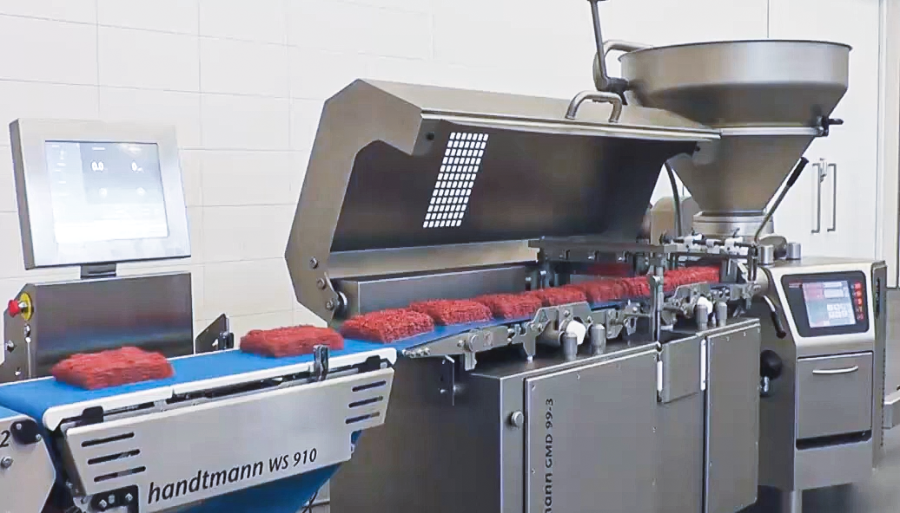
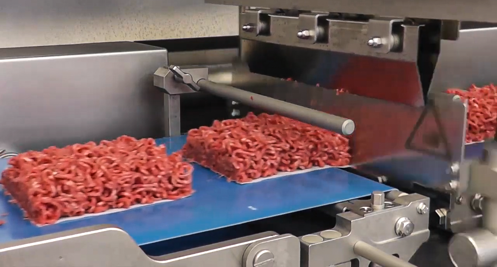

Handtmann
Handtmann ミンチ製造ライン
ミンチ製造〜定貫包装
ミンチの製造からMAP（ガス置換包装）／真空包装までを完全ライン化。肉粒感を活かす高品質なミンチ製造〜重量補正による定貫包装を実現
Handtmann ミンチ製造ラインとは
handtmann ミンチ製造ラインは、塊肉の投入からミンチ化・定量分割・重量補正までを連続処理し、歩留まり向上と定貫化を実現します。真空定量充填機（VFシリーズ）、インライングラインダー（GD452）、定量分割システム（GMD99-3）、重量管理システム（WS910）を組み合わせたミンチ製造ソリューションです。さらにMULTIVAC深絞り包装機と連携することで、真空包装やMAP包装まで一貫した自動化ラインを構築できます。トレーシーラーとの連携も可能です。
WS910が製造中の重量をリアルタイムで監視し、VFシリーズへフィードバック制御を行うことで、過充填（原料ロス）を最小限に抑えながら安定した重量精度を実現します。




包装までの一貫提案
によるロングライフ化
統合管理（MLC）
- ライン一括起動・停止
- レシピ管理
- 品種切替
- 重量管理
- 生産監視
- 生産データ管理
実機テストが可能
- ミンチ品質・肉粒感評価
- 重量精度評価
- 包装適性評価
- 保存性評価
- 商品開発支援
まずはお気軽にお問い合わせください。
Hygienic Design
食品工場向けに衛生性と洗浄性に配慮したライン構成をご提案します。
国内サポート体制
導入提案から立上げ、アフターサポートまで国内スタッフが対応します。
グローバル導入実績
Handtmannの定量供給・ミンチ製造・重量管理システムは、世界各国の食肉加工工場で採用されています。
はい。GMD99-3による定量分割とWS910による重量補正を組み合わせることで、高精度な定貫商品の製造が可能です。
はい。MULTIVAC深絞り包装機と連携し、真空包装やMAP包装までの一貫ラインを構築できます。
一般的なグラインダーでは「搬送 → ミンチ化 → 再搬送」が必要ですが、GD452 Inline GrindingはVFシリーズと直結し、定量供給とミンチ化を1工程で実現します。原料への負荷や温度上昇を抑えながら肉粒感のある高品質なミンチを製造できるため、品質向上と工程削減を同時に実現できます。
WS910は重量を計測するだけでなく、製造中の重量データをVFへフィードバックし、自動で補正を行う重量管理システムです。過充填（ギブアウェイ）による原料ロスを抑制しながら高い重量精度を実現します。
VFシリーズによる高精度供給、GMD99-3による定量分割、WS910による動的重量補正を組み合わせることで、過充填を抑えながら定貫化を実現します。
牛ミンチ、豚ミンチ、合挽きミンチ、鶏ミンチをはじめ、ソーセージ原料やハンバーグ原料など幅広い用途に対応します。
いいえ。handtmann機器とMULTIVAC包装機は連携が可能です。MULTIVAC Line Control（MLC）を使用することで、ライン全体の起動・停止、レシピ管理、品種切替、稼働監視を一元管理できます。製造から包装までの情報を共有しながら運転できるため、オペレーター負荷軽減と安定した生産を実現します。
はい。LICにてミンチ品質、重量精度、包装適性、保存性評価を含めた実機テストが可能です。